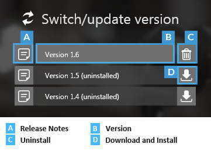

Launch Stride
Warning
Приносим свои извинения за неудобства. Для этой страницы нет перевода на русский язык. Она будет отображаться на английском языке.
Beginner
With the Stride launcher, you can install, manage and run different versions of Stride.
Install the latest version of Stride
If you don't have Stride installed, the Stride Launcher prompts you to install the latest version.

If you choose to install the latest version, the Stride Launcher asks if you want to install the Stride Visual Studio extension.

The Stride Visual Studio extension lets you you edit shaders directly from Visual Studio. You don't need to install the extension to use Stride, but we recommend it, especially for programmers.
Manage different versions of Stride
You can install multiple versions of Stride and launch them from the Stride Launcher.

You might need to use an older version of Stride to work with old projects. Newer versions of Stride might contain changes that require old projects to be upgraded.
For minor versions, only the last number of the version number changes (1.9.0, 1.9.1, 1.9.2, etc). Minor versions don't contain breaking changes, so they're safe to install and use with your existing projects.
Note
You can't revert to earlier minor versions. For example, you can install both Stride 1.9 and 1.8 side by side, but you can't revert from Stride 1.9.2 to Stride 1.9.1.
To see the release notes for a particular version, click the note icon next to the version name.
To install a particular version, click the Download and install icon next to the version name.
Start Game Studio
Now you've installed Stride, it's time to start Game Studio and build a project.
Under Switch/update version, select the version of Stride you want to use.
The version number is updated on the Start button.

Click Start to launch Game Studio.
What's next?
See also
For more details about the Stride launcher, see the Stride launcher page.